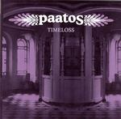

| Artist: | Paatos |
| Title: | Timeloss |
| Label: | Stockholm Records |
| Length(s): | 40 minutes |
| Year(s) of release: | 2002 |
| Month of review: | [12/2002] |
| 1) | Sensor | 5.11 |
| 2) | Hypnotique | 8.32 |
| 3) | Téa | 5.45 |
| 4) | They Are Beautiful | 7.44 |
| 5) | Quits | 12.17 |
Next up is Hypnotique with the soothing, muffled vocals typical of the Portishead sound. Plenty of moodiness, plenty of atmosphere and also fortunately also plenty of melody. The music becomes even stiller later on with running water, flute and piano. We are getting close the ambient music here or Paul Horn. Of course, Horn never uses mellotron, or at least not on those albums I happen to know. And the mellotron gives doses of atmosphere here as well as on the previous track. There is some dynamics in that the music becomes louder and goes softer again, but on the whole this is a very slow moving affair, with some cello at the end. The finale is wonderful, especially the keyboards.
Swedish vocals we find on Téa. Softspoken and sad, the links to Anekdoten are again obvious. The piano dances, the melodies are subtle and sensitive. If I have reasoned correctly, Téa refers to a person, possibly a child. This song combines sadness with emotive power and has the same effect on me that for instance Hole of From Within had.
They Are Beautiful opens soothingly again, with strumming acoustic guitar and clarinet. The vocals are soft and sad as well, as they often are. The instrumentation is quite minimal here with occasional sounds, the vocals lie on top of the music mainly and have that intimacy. Towards the end, the music builds up a little to let off towards the end. But there is no climax this time.
The longest track by far is Quits, which is more in the line of the first track. The vocals for instance are more plaintive and clearer, more straightforward you might say. The percussion is fast and modern, loose. The vocals are doubled at times, rushes of piano ring out. The middle part consists mainly of overactive percussion, quite neurotic at times. People will have a hard time considering this progressive, think more of Massive Attack and Portishead here. Past the nine minutes, the music takes a very different turn. I guess this is meant with the Fall Apart in the lyrics. A raging avant horn session rings out in full and without reprieve. I do not mind the track being on the album, but I think I prefer the earlier ones. More melody and more of that sweet dark emotion in those.